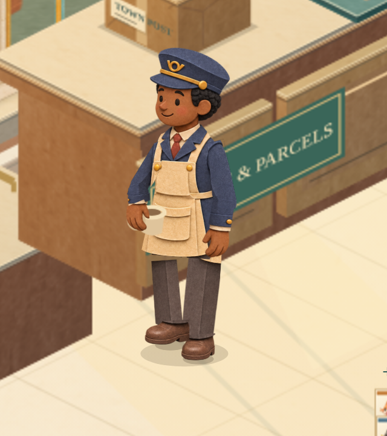
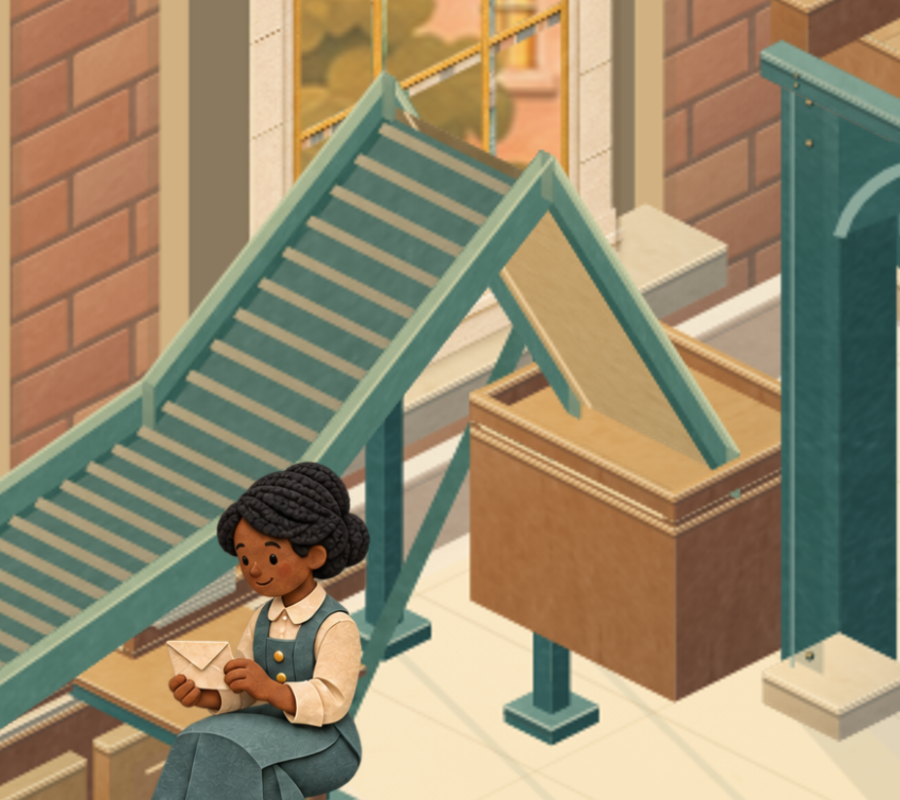
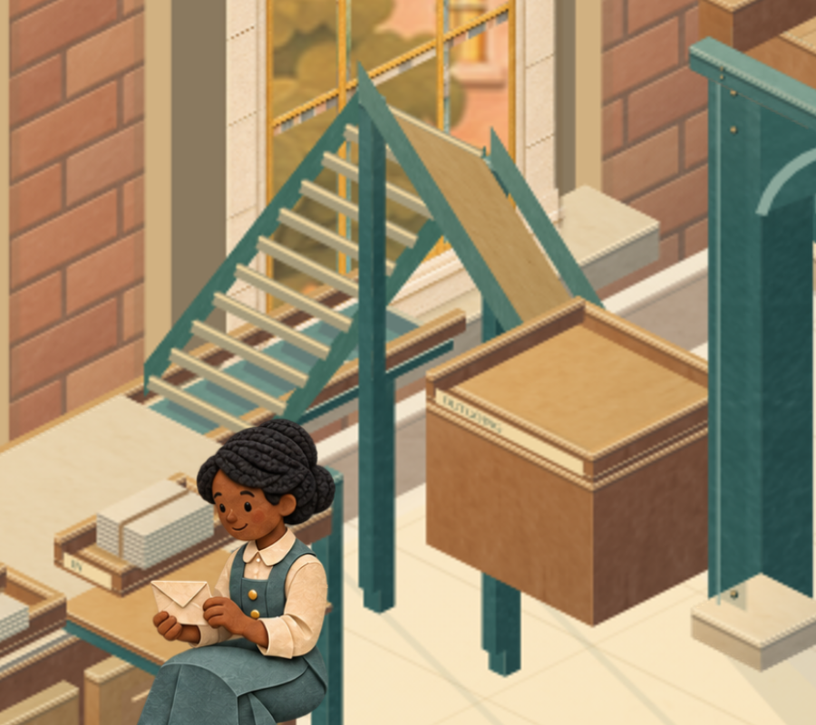
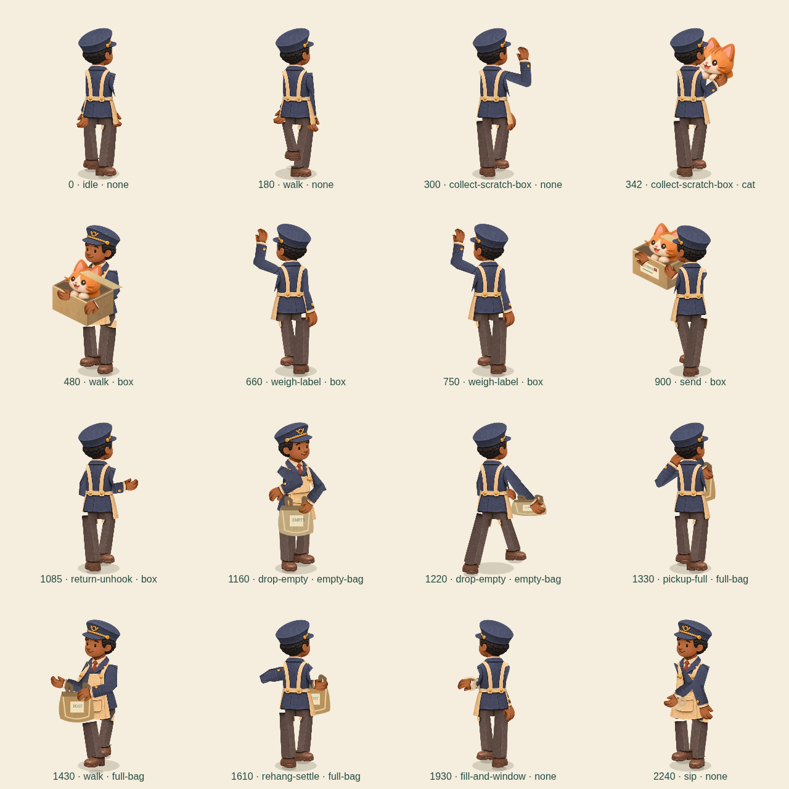
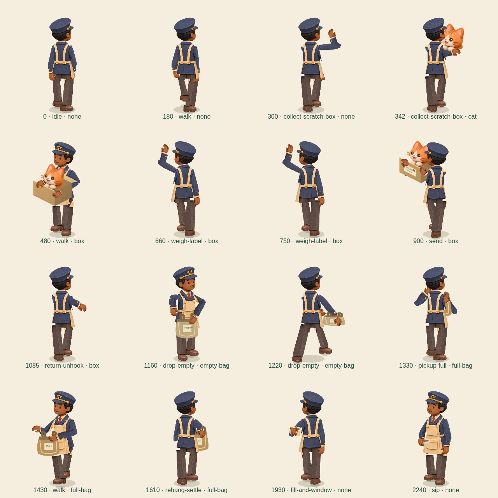
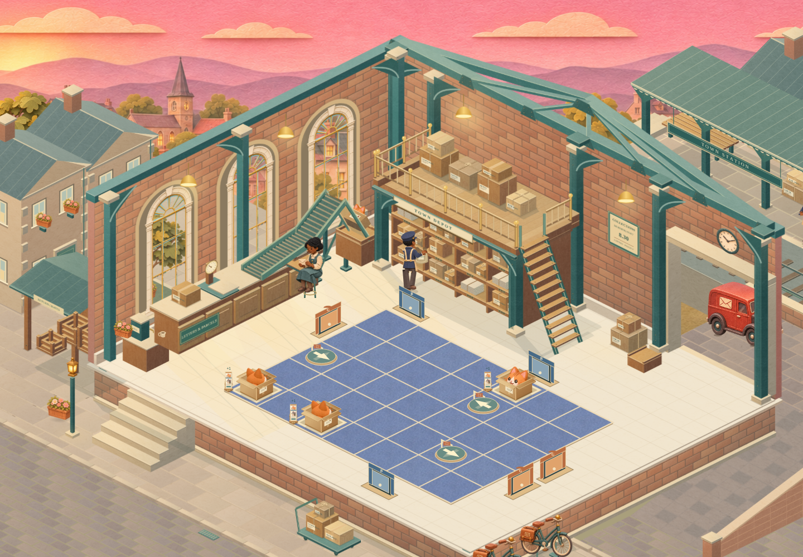

Cats by Post · Town Depot
A steadier courier.
A connected postal slide.
The courier’s elbows now bend without flipping across his body. His hands keep their shape at the cuffs. The lift and slide have joined rails, a continuous bed, grounded supports and a receiving tray at the correct height.

The resting tea pose.

One joined lift, crest and outlet.
Watch the corrected movement
The postal round keeps its original schedule. These recordings show the actual playable renderer.
The courier lifts and lowers his cup.The parcel travels over the lift and down the slide.
Before the correction


Working poses across the whole round

The full 48-second postal round
Maximum board and room composition

All 25 existing deliveries and all four board sizes are retained. Gameplay, timings, progress and saves are unchanged. Review and integration notes.